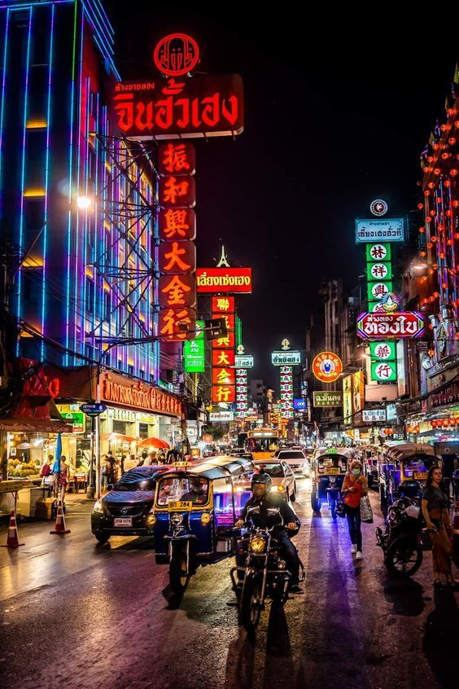
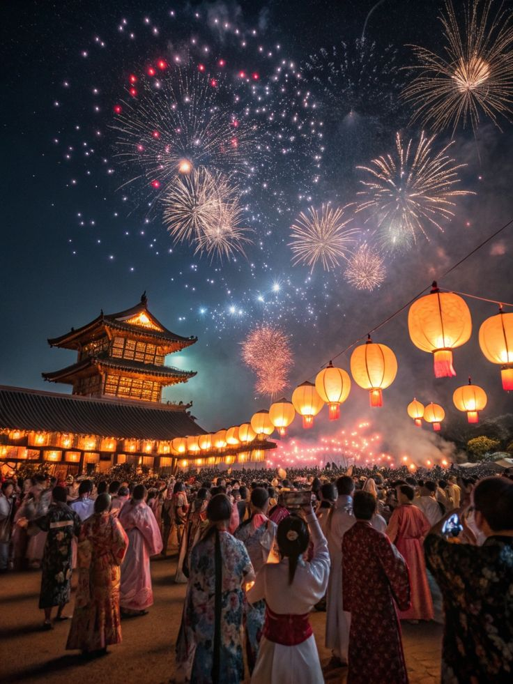
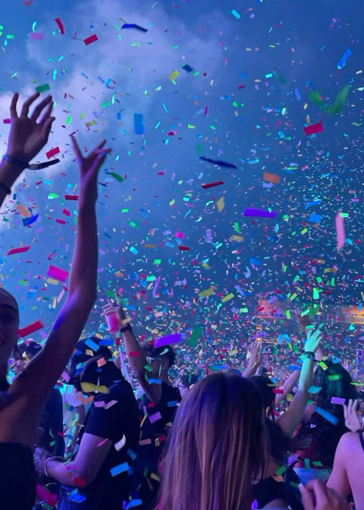

Bangkok, Tailandia
Con una Vida Nocturna Vibrante, Bangkok es famosa por su vida nocturna, con una mezcla de bares, clubes y fiestas en azoteas que ofrecen vistas impresionantes de la ciudad.
Su cultura única hace que puedas disfrutar de fiestas que combinan la cultura tailandesa con música y baile, lo que hace que la experiencia sea aún más especial.
Puedes encontrar una gran diversidad de Opciones, desde fiestas en la calle hasta clubes de lujo, hay algo para todos los gustos y presupuestos.

Tokio, Japón
Tokio es conocida por su cultura pop y su ambiente futurista, lo que se refleja en sus fiestas temáticas y clubes únicos.
Hay una gran variedad de distritos, ya que cada barrio tiene su propio estilo de fiesta, desde el bullicioso Shibuya hasta el elegante Roppongi, lo que te permite explorar diferentes ambientes.
Experiencias Únicas: Puedes encontrar desde bares de karaoke hasta clubes de techno, lo que garantiza que siempre haya algo nuevo que descubrir

Amsterdam, Paises Bajos
La ciudad tiene una atmósfera relajada y acogedora, ideal para disfrutar de una noche de fiesta sin presiones.
Los bares y cafés de Ámsterdam son perfectos para socializar, y muchos ofrecen música en vivo y eventos especiales.
Finalmente, una experiencia única en Ámsterdam es disfrutar de fiestas en barcos por los canales, lo que añade un toque especial a la noche.